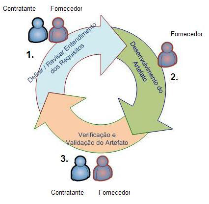

Uma Abordagem Baseada em Definição de Requisitos e em Verificação e Validação para o Processo de Monitoração de Aquisição de Software
Autores do artigo: Fabio Abreu, Pedro Farias, Adriano de Albuquerque
Apresentação: Alessandro, Fabricio, Lucas
Uma Abordagem Baseada em Definição de Requisitos e em Verificação e Validação para o Processo de Monitoração de Aquisição de Software
Autores do artigo: Fabio Abreu, Pedro Farias, Adriano de Albuquerque
Apresentação: Alessandro, Fabricio, Lucas
Agenda:
- Introdução
- Relatórios
- Objetivo
- Guias, Normas, Modelos para Monitoração de Aquisição de Software
- Normas e Modelos para Verificação e Validação de Software
- Processo de Monitoração de Aquisição de Software Baseado em Definição de Requisitos e em Verificação e Validação
Introdução
- Atualmente as organizações têm adquirido cada vez mais soluções de tecnologia, obtendo serviços de desenvolvimento de software junto a fornecedores;
- A necessidade de se obter soluções atendendo a padrões de qualidade cada vez mais altos, com rapidez, a um custo baixo e com as tecnologias apropriadas é crescente;
Importância das atividades:
- Definição de requisitos;
- Verificação e validação dos produtos gerados;
Relatório do Caos
- Projetos:
- 32% dos projetos são considerados bem sucedidos;
- 44% dos projetos são considerados desafiados;
- 24% dos projetos restantes são cancelados em algum ponto durante o ciclo de desenvolvimento;
Relatório do Caos
- Principais razões:
- Envolvimento do usuário;
- Suporte dagerência executiva;
- Declaração clara dos requisitos;
Guias, Normas, Modelos para Monitoração de Aquisição de Software
Software Engineering Institute (SEI)
- É o líder na divulgação e promoção da melhoria dos processos de software através de modelos de capacidade. O modelo mais conhecido é o Capability Maturity Model Integration (CMMI);
Project Management Institute (PMI)
- Importante organização que promove a melhoria dos processos de gerenciamento de projetos, programas e portfólio cujo principal produto é o Project Management Body Of Knowledge (PMBOK);
Monitoração de Software
- A monitoração da aquisição é caracterizada pelas atividades pós contrato, atividades onde estão presentes os maiores riscos ao sucesso da aquisição e é requerido maior esforço por parte das organizações;
- O entendimento dos requisitos é o diferencial do processo proposto que busca minimizar riscos;
Normas e Modelos para Verificação e Validação de Software
ISO/IEC 12207
- Define o processo de verificação como um processo de apoio cujo objetivo é determinar se os produtos desenvolvidos em uma determinada atividade atendem completamente os requisitos ou condições impostas a eles nas atividades anteriores do processo de desenvolvimento;
Pro. de Mon. de Aqu. de Soft. Baseado em Definição de Req e em Verificação e Validação
Ciclo das atividades do processo proposto

Ciclo do processo definido por fase do desenvolvimento